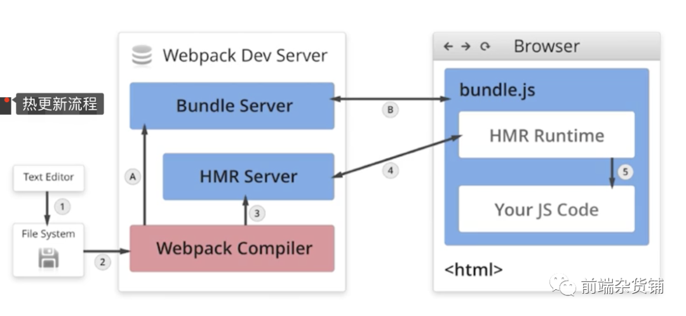

- webpack 热更新原理，是如何做到在不刷新浏览器的前提下更新页面
-
- 一. 首先介绍webpack-dev-ser, 它包含三个部分
- 1. webpack负责编译代码
- 2. webpack-dev-middleware: 主要负责构建内存文件系统，把webpack的outputFileSystem替换成InMemoryFileSystem
- 3.express：负责搭建请求路由服务
- 二. 工作流程
- 1.启动dev-server，webpack开始构建，在编译期间会向 entry 文件注入热更新代码
- 2.Client 首次打开后，Server 和 Client 基于Socket建立通讯渠道；
- 3.修改文件，Server 端监听文件发送变动，webpack开始编译，直到编译完成会触发"Done"事件；
- 4.Server通过socket 发送消息告知 Client；
- 5.Client根据Server的消息（hash值和state状态），通过ajax请求获取 Server 的manifest描述文件；
- 6.Client对比当前 modules tree ，再次发请求到 Server 端获取新的JS模块；
- 7.Client获取到新的JS模块后，会更新 modules tree并替换掉现有的模块；
- 8.最后调用 module.hot.accept() 完成热更新；
